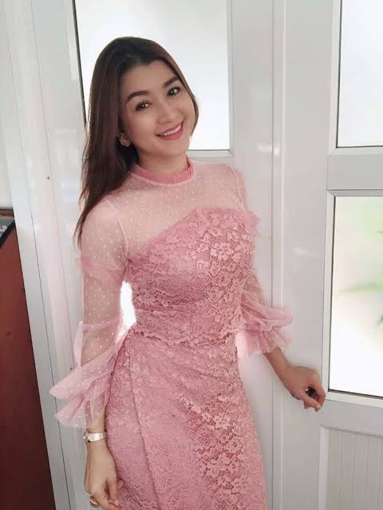
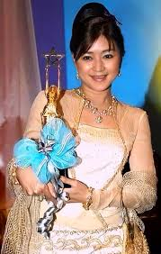

|  | Name | Endra Kyaw Zin |
|---|---|---|
| Other Name | Eu Wae - အူဝဲ | |
| Education | B.Sc. (Chemistry) | |
| Occupation | Actress, model, Producer, Businesswoman | |
| Years active | 1996–present | |
| Born | 24 April 1977 (age 47)Rangoon, Burma | |
| Nationally | Burmese | |
| Height | 160 cm (5 ft 3 in) | |
| Title | Miss Christmas 1996 | |
| Spouse | Pyay Ti Oo (m. 2011) | |
| Children | Pyay Thudra, Pyay Diya | |
| Awards | Myanmar Academy Award for Best Actress (2004, 2017, 2019) |
| Early life & Education |
|---|
| Eaindra Kyaw Zin was born to a well-to-do family in Yangon, the youngest child of Mya Thida and Kyaw Zin. She is a granddaughter of Bo Zeya, one of the Thirty Comrades that founded the modern Burmese Army, a niece of Dagon Taya, a writer, and a first cousin of singer Hayma Ne Win and singer and film star Yaza Ne Win. Kyaw Zin graduated from Yangon's Dagon 1 High School. She holds a B.Sc. degree in chemistry.She married actor Pyay Ti Oo on 1 January 2011. They have two children. |
| Career |
| In an interview with The Myanmar Times, Kyaw Zin admitted that film was not her initial choice of a career. Rather she envisioned herself as an independent artist or a doctor but had to reevaluate her options after getting sub-par grades in school. Her first foray into the entertainment industry came by way of a local beauty contest. She won the Miss Kokkine contest in 1996, and then went on to win Miss Christmas that same year. After this year, she became to act in TV series such as Loving Editor (Chit Thaw Editor) and Ah Hnine Mae. She became popular in Ah Hnine Mae TV series with a character called Po Tay. For the next two years she appeared in magazines and modeling shows. In 2000, she scored her big break as an actress in the film Pyaw Lai Kya Ya Aung (Let's Have Great Fun) as the lead actress.[1] She was nominated as best lead actress at Tha-Mee-Shin Film for 2000 Academy. |
| Year | Title | Director | Co-Star | Role |
|---|---|---|---|---|
| 2015 | Maunt Eain Thu | Thi Dar Linn (Laurel) | Lu Min,Tun Tun Win,Hla Yin Kyay, Yoon Yoon | Nominated-Best Actress Award |
| 2017 | Yin Bat Htae Ka Dar | Wyne (Own Creater) | Pyay Ti Oo,Nay San, Htun Eaindra Bo,Myat Kay Thi Aung,May Ka Byar,Khin Moh Moh Aye,Nwae Nwae San | Won-Best Actress Award |
| 2018 | Reflection | Lu Min | Htun Eaindra Bo, Wut Hmone Shwe Yee, Patricia | Post-Production |
|  | Year | Nominated Work | Category | Result |
|---|---|---|---|---|
| 2004 | Myet Nhar Myar Tae Kaung Kin | Best Actress | Award | |
| 2017 | Yin Bat Htae Ka Dar | |||
| 2019 | Hit Tine |